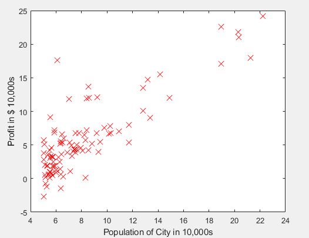
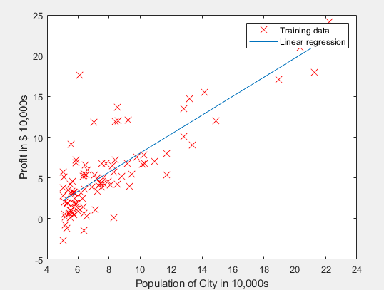

吴恩达机器学习——单变量线性回归
Aug 16, 2019 14:43 · 85 words · 1 minute read
基本概念
### 假设函数
我们得到一个训练集，并用其进行某种预测时，我们可以根据训练集得出一个假设函数。
如下图所示，下图为某种行业效益值y与程视人口数量x的训练集

根据图像特征，我们可以得出这些数据可以用下图函数来代表：

因此我们可以得出一个假设函数：
$$
h{\theta}=\theta{0}+\theta_{1}X
$$
代价函数
在作出假设函数之后，我们要对建设函数中的两个未知量$$\theta{0}$$和$$\theta{1}$$做出选择，即选择不同的$$\theta{0}$$$$\theta{1}$$，验证所选择的值是否能时假设函数最大程度的能跟数值相符合
对于如何判断所选择的$$\theta{0}$$和$$\theta{1}$$时最好的，我们选择均方误差来作为衡量标准，即： $$ J(\theta)=\tfrac{1}{2m}\sum{i=0}^{m}(h{\theta}(x^{i})-y^{i})^{2} $$ 此即为我们的代价函数，函数值绝对值越小表示$$\theta{0}$$和$$\theta{1}$$越符合目标值
梯度下降算法
前言
在求代价函数的最小值时，以二维图像来为例表示函数值变化规律来讲，假设函数值变化规律如下图所示

1处为最小值点，我们发现如果根据函数特征看，当$$\Delta x$$与$$y’$$符号相反时，沿着这个方向可以从任何点到达最小值处，因此在学习过程中可以根据导数（当为多元函数时为梯度）来判断如何改变变量值，来是的求解过程更加快速。
梯度定义
梯度表示某一函数在该处的方向导数沿着该方向取得最大值，即函数在该点处沿着该方向变化最快，变化率最大
多元函数梯度表达式
$$ \bigtriangledown f = (\frac{\partial f}{\partial x{i}}) 其中(\bigtriangledown f){i}=\frac{\partial f}{\partial x_{i}} $$
根据梯度下降法则选择$$ \theta$$
在选取变量$$\theta$$值时，根据梯度下降法则应该按照以下规则选取$$\theta$$的值
$$
\theta = \theta - \alpha \bigtriangleup f
$$
其中$$\alpha$$为学习率，自己选取,因为梯度的方向是函数f增长最快的方向，梯度的反方向是f降低最快的方向，所以选取梯度的负数方向。
梯度下降算法求解过程
1.初始化参数为任意值。
2.求解梯度$$\bigtriangleup f$$
3.更新参数$$\theta = \theta - \alpha \bigtriangleup f$$
4.若达到指定迭代次数或者收敛条件，训练结束
若没有，则重复执行步骤2-步骤4